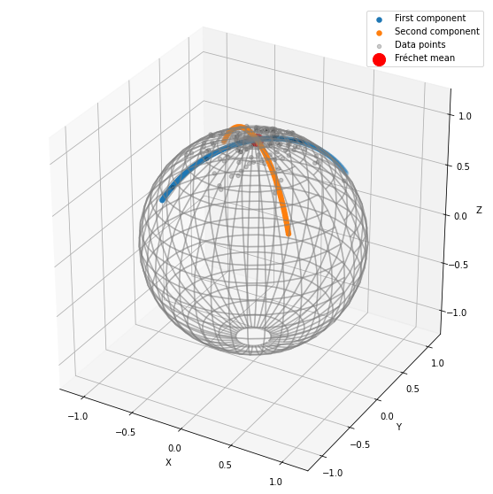

import os
import sys
import warnings
sys.path.append(os.path.dirname(os.getcwd()))
warnings.filterwarnings('ignore')Tutorial: Fréchet Mean and Tangent PCA
This notebook shows how to compute the Fréchet mean of a data set. Then it performs tangent PCA at the mean.
Setup
import matplotlib.pyplot as plt
import geomstats.backend as gs
import geomstats.visualization as visualization
from geomstats.learning.frechet_mean import FrechetMean
from geomstats.learning.pca import TangentPCAINFO: Using numpy backendOn the sphere
Generate data on the sphere
from geomstats.geometry.hypersphere import Hypersphere
sphere = Hypersphere(dim=2)
data = sphere.random_von_mises_fisher(kappa=15, n_samples=140)fig = plt.figure(figsize=(8, 8))
ax = visualization.plot(data, space='S2', color='black', alpha=0.7, label='Data points')
ax.set_box_aspect([1, 1, 1])
ax.legend();
Fréchet mean
We compute the Fréchet mean of the simulated data points.
mean = FrechetMean(metric=sphere.metric)
mean.fit(data)
mean_estimate = mean.estimate_fig = plt.figure(figsize=(8, 8))
ax = visualization.plot(data, space='S2', color='black', alpha=0.2, label='Data points')
ax = visualization.plot(mean_estimate, space='S2', color='red', ax=ax, s=200, label='Fréchet mean')
ax.set_box_aspect([1, 1, 1])
ax.legend();
Tangent PCA (at the Fréchet mean)
We perform tangent PCA at the Fréchet mean, with two principal components.
tpca = TangentPCA(metric=sphere.metric, n_components=2)
tpca = tpca.fit(data, base_point=mean_estimate)
tangent_projected_data = tpca.transform(data)We compute the geodesics on the sphere corresponding to the two principal components.
geodesic_0 = sphere.metric.geodesic(
initial_point=mean_estimate,
initial_tangent_vec=tpca.components_[0])
geodesic_1 = sphere.metric.geodesic(
initial_point=mean_estimate,
initial_tangent_vec=tpca.components_[1])
n_steps = 100
t = gs.linspace(-1., 1., n_steps)
geodesic_points_0 = geodesic_0(t)
geodesic_points_1 = geodesic_1(t) fig = plt.figure(figsize=(6, 6))
ax = fig.add_subplot(111)
xticks = gs.arange(1, 2+1, 1)
ax.xaxis.set_ticks(xticks)
ax.set_title('Explained variance')
ax.set_xlabel('Number of Principal Components')
ax.set_ylim((0, 1))
ax.bar(xticks, tpca.explained_variance_ratio_);
fig = plt.figure(figsize=(10, 10))
ax = fig.add_subplot(111, projection="3d")
ax = visualization.plot(
geodesic_points_0, ax, space='S2', linewidth=2, label='First component')
ax = visualization.plot(
geodesic_points_1, ax, space='S2', linewidth=2, label='Second component')
ax = visualization.plot(
data, ax, space='S2', color='black', alpha=0.2, label='Data points')
ax = visualization.plot(
mean_estimate, ax, space='S2', color='red', s=200, label='Fréchet mean')
ax.legend()
ax.set_box_aspect([1, 1, 1])
plt.show()
In the Hyperbolic plane
Generate data on the hyperbolic plane
from geomstats.geometry.hyperboloid import Hyperboloid
hyperbolic_plane = Hyperboloid(dim=2)
data = hyperbolic_plane.random_point(n_samples=140)fig = plt.figure(figsize=(8, 8))
ax = visualization.plot(data, space='H2_poincare_disk', color='black', alpha=0.7, label='Data points')
ax.legend();
Fréchet mean
We compute the Fréchet mean of the data points.
mean = FrechetMean(metric=hyperbolic_plane.metric)
mean.fit(data)
mean_estimate = mean.estimate_fig = plt.figure(figsize=(8, 8))
ax = visualization.plot(data, space='H2_poincare_disk', color='black', alpha=0.2, label='Data points')
ax = visualization.plot(mean_estimate, space='H2_poincare_disk', color='red', ax=ax, s=200, label='Fréchet mean')
ax.legend();
Tangent PCA (at the Fréchet mean)
We perform tangent PCA at the Fréchet mean.
tpca = TangentPCA(metric=hyperbolic_plane.metric, n_components=2)
tpca = tpca.fit(data, base_point=mean_estimate)
tangent_projected_data = tpca.transform(data)We compute the geodesics corresponding to the first components of the tangent PCA.
geodesic_0 = hyperbolic_plane.metric.geodesic(
initial_point=mean_estimate,
initial_tangent_vec=tpca.components_[0])
geodesic_1 = hyperbolic_plane.metric.geodesic(
initial_point=mean_estimate,
initial_tangent_vec=tpca.components_[1])
n_steps = 100
t = gs.linspace(-1., 1., n_steps)
geodesic_points_0 = geodesic_0(t)
geodesic_points_1 = geodesic_1(t) fig = plt.figure(figsize=(6, 6))
ax = fig.add_subplot(111)
xticks = gs.arange(1, 2+1, 1)
ax.xaxis.set_ticks(xticks)
ax.set_title('Explained variance')
ax.set_xlabel('Number of Principal Components')
ax.set_ylim((0, 1))
ax.bar(xticks, tpca.explained_variance_ratio_);
fig = plt.figure(figsize=(8, 8))
ax = fig.add_subplot(111)
ax = visualization.plot(
geodesic_points_0, ax, space='H2_poincare_disk', linewidth=2, label='First component')
ax = visualization.plot(
geodesic_points_1, ax, space='H2_poincare_disk', linewidth=2, label='Second component')
ax = visualization.plot(
data, ax, space='H2_poincare_disk', color='black', alpha=0.2, label='Data points')
ax = visualization.plot(
mean_estimate, ax, space='H2_poincare_disk', color='red', s=200, label='Fréchet mean')
ax.legend()
plt.show()